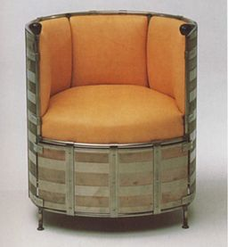
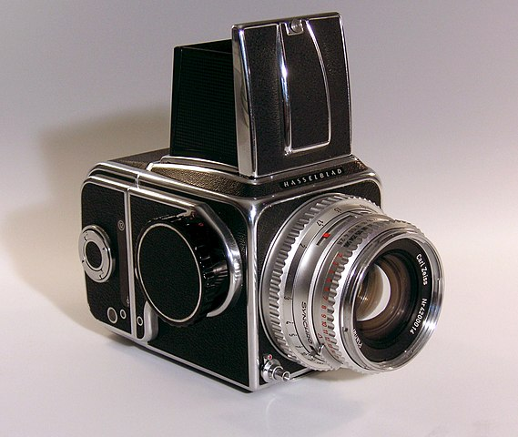
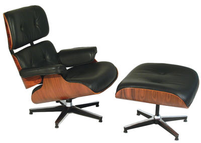

Design
Formgivning, eller design, är ett begrepp som beskriver ett föremåls konstruktion, utseende eller den skapandeprocess som används från idéstadiet till färdig produkt. Dessa produkter utvecklas efter funktionella och estetiska krav med utgångspunkt från brukarens behov. Design tillämpas för utveckling av varor, tjänster, processer och miljöer. Då inkluderas funktioner som teknik, användarvänlighet, miljövänlighet, utseende, affärslösningar och även marknadsföring. Det finns emellertid ingen allmänt accepterad definition av ordet design, då termen har olika betydelser inom olika designdiscipliner och användarområden.
Ordet design kommer från latinets designo = peka ut, avbilda, framställa. Design är en engelsk term med den ursprungliga innebörden för plan, skiss, ritning, vilken motsvarades av dessein i 1600-talets Sverige. År 1650 sägs exempelvis att drottning Kristina hade fullföljd sin faders "högberömlige och förnäme desseiner". Man syftade då på den pågående stadsplaneringen i Stockholm och att Gustav II Adolf själv aktivt hade påverkat den.
Mänsklighetens tidiga formgivning
Formgivning av, genom människan framställda, föremål går hand i hand med önskemålet att förbättra föremålet i fråga. Så är en noggrann bearbetning av en pilspets på stenåldern redan ett tidigt exempel för formgivning, likaså att tillverka denna pilspets senare i bronseller järn. I exemplet med pilspetsen berörs även formgivarens insats. Utöver hantverksskicklighet krävs även att han eller hon måste vara kunnig i att behärska materialet (flinta, brons, järn) och användningsområdet (jakten). Att utföra pilspetsen dessutom "vacker" är säkert ingen slump. Det behövs alltså en tidig form av "tvärvetenskaplig" kunskap. Begrepp som materiallära, funktion, ergonomi och estetik finns redan vid framställningen av en pilspets på stenåldern.
Historik
Nedan hittar du en kort historik som beskriver formgivning och dess utveckling under 1900-talet.
1900-1910
I början av 1900-talet gjordes en rad viktiga tekniska framsteg som påverkade samhället och dess utveckling. Dessa tekniska framsteg gjorde det möjligt att sträva mot tidigare oanade nivåer, främst vad gäller effektivitet, där maskiner hade stor påverkan. Detta möjliggjordes av bland annat förbränningsmotorn, och den eldrivna motorn. Varor och produkter kunde med hjälp av maskiner och industrialisering framställas snabbare och billigare, detta undergrävde betydelsen av hantverkarskicklighet. Som en reaktion till dessa industriprodukter skapades rörelsen Arts and Crafts som en motpol där fokuset var att framhäva hantverkarskickligheten där varje produkt var unik. Trots att rörelsen framkom redan under den viktorianska tiden har konstinriktningen och dess grundinställning till produktion lämnat spår efter sig långt in på 1900-talet. Hos centralgestalterna inom maskinåldernsproducenter var inriktningen kvantitet snarare än kvalitet. Utmärkande drag för Arts and Crafts-rörelsen är att den präglades av medeltida och gotiska influenser. Det var viktigt att hantverket syntes i produkten och därigenom skilja den från maskintillverkade. För att hantverket skulle synas kunde fogar lämnas synliga på möbler och i metallsmidet lämnades märkena efter hammarslaget synliga.
1910-1920
Allt fler blev intresserade av maskinell tillverkning och hantverksmässig produktion fick ge efter på många håll. En grupp holländska konstnärer bildade De Stijl, även känd som neoplasticism, vilket var en rörelse som avlägsnade sig från den naturliga formen inom arkitektur och formgivning för att finna formspråk baserade på estetik med geometriska former, linjer och grundfärger. Med hjälp av maskiner kunde produkter standardiseras vilket underlättade för montering i löpandebandprincipen. Detta var en stor faktor till biltillverkaren Fords framgång och att många fler hade råd att köpa bil. För privatpersoner dök även tidsbesparande produkter upp, så som tvättmaskiner, hårtorkar och strykjärn. Gemensamt för dessa var att de drevs av elektricitet vilket var en ny företeelse. År 1919 grundades Bauhaus med syftet att utbilda formgivare till industrin, där fokus var att använda nya industrimaterial fria från detaljer och pålagd dekor som skulle undvika att referera bakåt i tiden.
1920-1930
Under 1920-talet började modernismen växa fram och i Europa tog den ordentlig fart under 1920-talet. Modernismen var till skillnad från tidigare tankesätt mer experimentell och testade samhällets normer. Från denna kultur uppstod ett flertal olika stilar bland annat funktionalismen. Denna spred sig från arkitekturen till gestaltningen av bruksföremål som möbler, glas, keramik, metall, textil och slutligen till industridesignen. Funktionalismen utmärks genom att föremål ska utformas utifrån dess funktion, släta ytor, geometriska former utan utsmyckning och dekoration. Föremålets funktion sattes i större fokus än att den skulle vara estetisk vacker, detta innebar att onödiga attribut och utsmycknader som inte fyllde någon funktion valdes bort. Ofta formgavs produkter utifrån vanliga enkla geometriska figurer, så som rätblock, kuber och cylindrar. Några kända exempel inom möbelbranschen för årtiondet är Grand Confort, Barcelona och MR10. Som en reaktion mot funktionalismen strama och avskalade formspråk skapades art deco där man istället ville framhäva det individuella, dekorativa och exklusiva. Konststilen hade sin höjdpunkt 1925 men var populär i USA till början av 1950-talet.
1930-1940
På 1930-talet började ett nytt material revolutionera formgivarens möjligheter att gestalta industriprodukter, nämligen bakelit, en osmältbar härdplast som hade uppfunnits 1907 av Leo Baekeland. Tidigare stansades apparatkåpor i plåt eller tillverkades av olika träslag, vilket tog lång tid och begränsade formgivarens svängrum. Nu blev det möjlig att skapa nya former på ett enkelt sätt och i långa serier till låga kostnader. Eftersom bakelit varken brinner eller leder elektrisk ström lämpade det sig särskilt bra för radioapparaternas höljen och introducerades främst i England och USA. I Danmark lanserade Bang & Olufsen 1938 sin bakelitradio Beolit 39, formgiven av delägaren i företaget Peter Bang och som tillverkades fram till 1940. I Sverige var Ericssons bakelittelefon från 1931 världens första telefon med klyka och fingerskiva helt integrerade med apparatkåpan.
Under årtiondet föddes även ett nytt begrepp; industridesign. Den amerikanska varianten av funktionalismen var "strömlinjeform". Nästan allt skulle vara strömlinjeformat; från ånglokomotivet över bilen till pennvässaren.
1940-1950

Fåfölj som var billigt att tillverkas
Andra världskriget påverkade industridesign och produktion genom att förbrukning av råmaterial begränsades. En del material som silver och aluminium gick inte att få tag på och många fabriker ställde om till militär produktion. Möbler som tillverkades skulle vara hållbara utan att slösa på material, detta gjorde att produkter kunde vara både billiga och välgjorda men kunde sakna känslan av lyx. Bristen på råmaterial drev statliga kommissioner att experimentera med nya material, såsom plaster. Detta material hade tidigare inte använts i stor utsträckning och när den började ersätta tidigare material kunde tekniska förändringar göra som påverkade varornas utseende markant.
Plaster i olika slag började bland annat användas som material till stolar,
Eero Saarinens Womb och Charles Eames DAR-stol i glasfiber är två exempel. År 1942 introducerade Earl Tupper polyetenkärl med lufttäta lock i pastellfärger som även kallas Tupperware. Plexiglas användes som substitut till glas, nylon användes i fallskärmar och PVC användes till regnkläder och paraplyer. Televisionen introducerades till hemmet och tillsammans med radion och grammofonen byggdes de ofta in i traditionella möbler.
I Sverige tog Sixten Sason fram sin världsberömda Hasselbladkamera för 6x6 cm mellanformat. Den första hette "1600 F" och lanserades den 6 oktober 1948 av Victor Hasselblad på New York Athletic Club i New York, inför ett tjugotal av USA:s ledande fotoskribenter.

Hasselblad kamera 500c
1950-1960

Exempel på Eames möbeldesign för den här fåföljen
På 1950-talet var det åter plast som gav designerna nya gestaltningsmöjligheter. I motsats till bakelit som måste formas under högt tryck i stora pressverktyg kunde nu en ny plastsort, termoplast, sprutas i en form eller ges genom värme och tryck det önskade utseende.
Den amerikanska arkitekten Charles Eames var en av de mest inflytelserika möbeldesignerna under årtiondet. Eames använde sig av ett formspråk som utnyttjade nya teknologiska uppfinningar inom behandling och bearbetning av plast, trä och metall. Hans experiment med formpressad plywood ledde så småningom till den berömda fåtöljen med fotpall “Eames Lounge chair 670” från 1956. Den var tillverkad av tre formpressade rosenträskålar med stoppad skinnklädsel och en gjuten aluminiumfot.
1960-1970
Efter andra världskriget uppstod en kraftig ökning av födelsetal, dessa barn har under 60-talet vuxit upp och blivit en viktig ung målgrupp för företag. Dessa unga människor såg modernismen och funktionalismen, som deras föräldrar följt, som omodern. Istället för beständighet och enhetlighet ville de unga ha förändring och mångfald. Teknikens snabba utveckling gjorde det möjligt för en slit och släng-kultur och detta blev uppkomsten till masskonsumtion. En kombination av nya former, ny teknik, nya material och nya färger förändrade formgivningen inom alla områden.
Slit och släng-tanken slog igenom på många fronter och engångsbestick, engångsblöjor och engångständare blev allt vanligare. Papperskläder och möbler skapades, mer som en gimmick men visar på genomslaget av den kulturen.
USA och Ryssland tävlade om vilket land som kunde ta sig ut i rymden och bestiga månen. Denna rymdålder påverkade formgivningen och produkter tillverkades ofta i plast med ett futuristisk utseende.
Några inflytelserika formgivare under denna period var Verner Panton mest känd för sin plaststol gjutet i ett stycke, Gunnar Aagaard Andersen som bland annat formgav en fåtölj i materialet polyuretan. Eero Aarnio skapade Ball chair 1963 i materialet akryl och glasfiber med en aluminiumfot och klädsel, formad som en kapsel. Eero Aarnio skapade även Bubble chair 1968 som en vidareutveckling där kapseln tillverkades i transparent plast och hängdes ovanifrån istället för att stå på en fot.
1970-1980
Årtiondets viktigaste rörelse var postmodernismen som huvudsakligen var motståndare till modernismen som ansågs vara elitisk. Istället för att söka en universell estetik lånade formgivare verk från tidigare epoker och omarbetade dem med färg, material och struktur. Under årtiondet blev det även lättare att flytta tonvikten från massproduktion till att skräddarsy produkter för färre individer, vilket gjorde att man kunde nå ut till en begränsad marknad. Mikrochipsen som kan anses som en av århundradets viktigaste uppfinningar gjorde att elektroniska komponenter kunde reduceras i storlek, ett exempel är den bärbara stereon Sony Walkman som introducerades 1979.
1980-1990
Utvecklingen inom elektronik gjorde att en rad banbrytande produkter kunde släppas på marknaden för privatpersoner. Bland annat lanserade IBM den första persondatorn under namnet IBM PC 1981 och tre år senare, 1984, lanserades Apples Macintosh 128k som använde sig av en datormus. Produkter som behandlade information och data var i fokus, CD-skivan introducerades och faxen var vanlig att se på kontoren. Ericsson utvecklade den första mobiltelefonen 1979 och blev en vardagsvara under 1980-talet.
Punken kom från Storbritannien och var inflytelserik inom mode, grafik och kultur. En av årtiondets viktigaste grupper var Memphis som bestod av en rad internationella arkitekter, möbel-, textil- och keramikformgivare. De utgick från postmodernismen och gjorde vid framtagning av sina produkter ett urval från klassisk arkitektur till 1950-talets kitsch. De använde sig av djärv och chockerande färgsättning och lade större vikt på föremålets utseende än funktion och praktiska användning.
Under årtiondet riktades större fokus mot frågor relaterade till miljö och ekologisk omsorg till skillnad från tidigare då produktion och konsumtion varit de viktigaste områdena. Detta ledde till att formgivare och konstruktörer skapade produkter som kunde återvinnas. Philippe Starck skapade exempelvis stolen Louis 20 där benen skruvades fast istället för att limmas så att delarna kunde tas isär och återvinnas var för sig.
1990-2000
1990-talet blev till en stor förnyelse av designen och i spåren av en lågkonjunktur i stora delar av världen ersätter nu minimalism den tidigare uppblåsta stilen. Internationellt upplevde shakerstilen en renässans med möbler från Italien. Christopher Dressers sockerskål i silver med tre ben från 1885 nytillverkades av Alessi, nu av plast och i klara färgr. Ikea började kopiera möbler i den Gustavianska stilen. Nytt datorstött designarbete underlättar skapelseprocessen speciellt inom industridesign.
För svensk del inleds decenniet med en stor skandinavisk idéutställning i Malmö som kallades Nordform 90. Bland svenska formgivare märks Thomas Sandell som skapade bland annat Bröllopspallen för Ikea. Företaget började nu satsa på unga formgivare för att skapa en specialkollektion vid sidan av den ordinarie. Bland kvinnliga designers bör nämnas Karin Björquist som fick uppdraget att formge en ny Nobelservis som framdukades första gången på Nobelbanketten den 10 december 1991.
Mats Theselius’ cylinderformade Älgskinnsfåtöljen kom 1991 och blev snart en klassiker och tillverkas fortfarande av Källemo. Likaså bokhyllan Pilaster av John Kandell som tillverkas av samma företag. Pilaster blev till och med avbildad på postens frimärke under Designåret 2005. A&E Design specialiserade sig på bland annat hjälpmedel för sjukhus och vårdinrättningar och lanserade 1998 sin dusch- och toalettstol clean. Barnstolen Robustritades 1962 av Stephan Gip och blev en klassiker bland barnstolar. Den har sålts i över 200 000 exemplar och produceras fortfarande (2018).